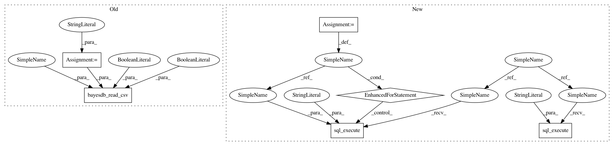

60bbffbbf2b61a09ee25ae6a7a42e29c26904b23,tests/test_column_dep.py,,test_complex_dependencies,#,29
Before Change
bayeslite.bayesdb_register_metamodel(bdb, ccme)
// Read the dataset.
table_name = "foo"
bayeslite.bayesdb_read_csv(bdb, table_name, data_csv, header=True,
create=True)
// Create schema, we will force IND(x y), IND(x v), and DEP(z v w).
bql = """
CREATE GENERATOR bar FOR foo USING crosscat(
After Change
bayeslite.bayesdb_register_metamodel(bdb, ccme)
// Read the dataset.
bdb.sql_execute("CREATE TABLE foo(x,y,z,v,w)")
for row in data:
bdb.sql_execute("INSERT INTO foo VALUES(?,?,?,?,?)", row)
// Create schema, we will force IND(x y), IND(x v), and DEP(z v w).
bql = """
CREATE GENERATOR bar FOR foo USING crosscat(
GUESS(*),
x NUMERICAL,
In pattern: SUPERPATTERN
Frequency: 3
Non-data size: 6
Instances
Project Name: probcomp/bayeslite
Commit Name: 60bbffbbf2b61a09ee25ae6a7a42e29c26904b23
Time: 2015-08-26
Author: fsaad@mit.edu
File Name: tests/test_column_dep.py
Class Name:
Method Name: test_complex_dependencies
Project Name: probcomp/bayeslite
Commit Name: c5a636f37759e2a7aced9aabcb97b1d9a806f9e0
Time: 2015-08-26
Author: riastradh+probcomp@csail.mit.edu
File Name: tests/test_column_dep.py
Class Name:
Method Name: test_impossible_duplicate_dependency
Project Name: probcomp/bayeslite
Commit Name: 60bbffbbf2b61a09ee25ae6a7a42e29c26904b23
Time: 2015-08-26
Author: fsaad@mit.edu
File Name: tests/test_column_dep.py
Class Name:
Method Name: test_complex_dependencies
Project Name: probcomp/bayeslite
Commit Name: c5a636f37759e2a7aced9aabcb97b1d9a806f9e0
Time: 2015-08-26
Author: riastradh+probcomp@csail.mit.edu
File Name: tests/test_column_dep.py
Class Name:
Method Name: test_impossible_nontransitive_dependency